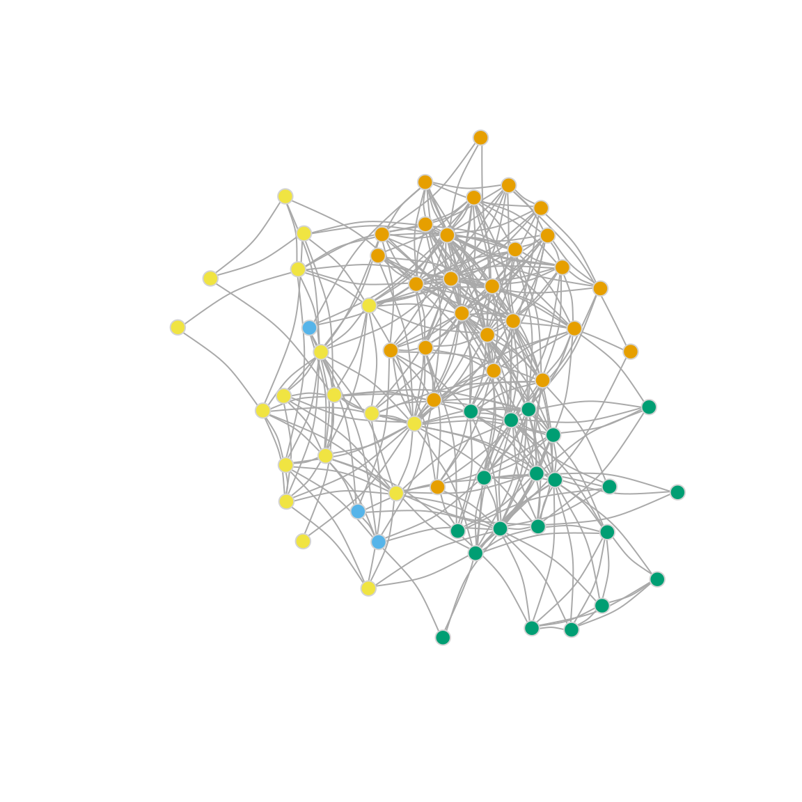

The Louvain Approach to Community Detection
As we saw in the modularity notes, Newman’s greedy algorithm merges whole communities, two at a time. The Louvain method proposed by Blondel et al. (2008) uses a similar bottom-up agglomerative strategy to maximize the modularity, but instead of merging pairs of communities, it moves single nodes from the community they are in to a neighboring community (a community where a node they are connected has already been assigned), ultimately keeping any move that increases the modularity. Then a second step kicks in, which collapses the communities found so far into single community-nodes creating a smaller weighted graph in which the communities found in the first step are the nodes and the weighted ties between them count how many edges ran between the two communities in the original network. The alternation repeats until no more improvements in the modularity are found.
Here we explore the method twice. The first approach uses a step by step decomposition of the method, and the second approach follows Fouss et al. (2016, 379–80), whose step 1 uses the modularity matrix \(\mathbf{B}\) to score candidate moves and whose step 2 is a single matrix product using the membership matrix \(\mathbf{U}\) that assigns nodes to communities (as discussed in the modularity notes).
The running example is the Lazega law firm friendship network (Lazega 2001) with degree-one nodes dropped, the same network used in the modularity note.
1 Step 1: Local Optimization by Moving Nodes Around
Here’s a function that implements the first step just described cycling through the nodes in random order, moving the node into each of its adjacent communities, and keeping the move if it improves the modularity:
Code
louvain.step1 <- function(x, seed = 123) {
set.seed(seed)
n <- vcount(x)
comm <- 1:n # every node starts in its own community
m <- Inf # moves made in the most recent full pass
while (m > 0) {
m <- 0
for (i in sample(n)) { # nodes are visited in random order
Ni <- neighbors(x, i) # neighbors of node i
commNi <- unique(comm[Ni]) # communities of i's neighbors
adjclust <- setdiff(commNi, comm[i]) # i's adjacent communities, excluding its own
if (length(adjclust) == 0) next # no adjacent community to move into
best.mod <- 0
t <- NULL
for (k in adjclust) { # loop over adjacent communities
tc <- comm
tc[i] <- k # tentatively move i into community k
mod.diff <- modularity(x, tc) - modularity(x, comm) # modularity change from the move
if (mod.diff > best.mod) {
best.mod <- mod.diff
t <- k # setting the target community to the one that gives the best gain
}
} # end of loop over adjacent communities
if (!is.null(t)) { # if a move was found that improves modularity
comm[i] <- t # move i into the best adjacent community
m <- m + 1 # update the count of moves made in this pass
}
}
}
return(comm)
}Lines 1-2 take the graph as an input and set the random-number seed from the
seedargument. Fixing the seed is required because the algorithm randomizes the node list before looping through them and different randomization orders can lead to different modularity maximization local optima. Line 3 counts the number of nodes, and line 4 gives every node its own community label (a vector of numbers between 1 and \(N\) where \(N\) is the number of nodes), so like Newman’s greedy algorithm the Louvain method also starts with every node in their own community.In line 5 we initialize the object
m(which counts how many nodes were relocated during the most recent full pass) using the value ofInf. Thewhileloop that starts in line 6 keeps going as long asmis greater than zero at the end of a pass. Line 7 resets the move count to zero before the sweep over nodes begins in theforloop in Line 8. The sweep is over a random ordering of the nodes, which we get using the nativeRfunctionsampleapplied to the vector of node numbers. An entire pass over every node that produces no relocations (m = 0) means that’s the end of thewhileloop.Lines 9-12 identify the candidate destinations for the current node
i, in three steps. First, line 9 collects a vector of the node IDs of the neighbors ofiusing theigraphfunctionneighbors. Second, line 10 collects a vector of the community labels of those neighbors, eliminating repeats (for neighbors in the same community) using the nativeRfunctionunique. Third, line 11 removesi’s own community from that list withsetdiff, storing the node’s adjacent communities in theadjclustobject (the communities containing at least one neighbor ofiother thani’s own). If that set is empty, theifcondition in line 12 skips the node.Lines 13-26 figure out whether the modularity improves based on candidate moves. For each node
iand each adjacent communitykof that node, lines 16-17 copy the current vector of community labels into the objecttc(line 16) and tentatively reassignitok(line 17). Line 18 finds the gain in modularity obtained from this reassignment by computing the modularity of the modified partition (modularity(x, tc)) and subtracting the modularity of the original one (modularity(x, comm)). If the gain in modularity from that node move is the best one we have seen so far in the loop then we store it inbest.modand record the community that produced it in objectt(line 21). If this happens, line 25 movesiinto communitytin the main community vector and line 26 increments themcounter by one.
lv.res
3 7 23 44 45 56 64
3 4 21 7 10 17 6 [1] 0.3256105The louvain.step1 function with default seed 123 puts the sixty-eight lawyers in \(k=\) 7 communities, three of them relatively large and four of them with fewer than ten members, for a modularity of 0.326. That is a good partition, but the presence of small clusters alongside the large ones should makes us suspect a better arrangement exists at a coarser grain.
2 Step 2: Aggregation into a Community Graph
The second step in the Louvain approach builds a new weighted graph whose nodes are the communities found in step 1. Each community becomes a single node, two communities connected by any links in the original graph become adjacent nodes joined by an edge whose weight is the total weight of the links between them, and each community node carries a self-loop whose weight is the total weight of the links internal to that community.
Here’s a function that creates the community graph from the original graph and the community assignments from step 1:
Code
louvain.step2 <- function(x, l) {
A <- as.matrix(as_adjacency_matrix(x, attr = if (is_weighted(x)) "weight" else NULL)) # adjacency matrix of the current graph
u <- unique(l) # the community labels become the new nodes
K <- length(u) # number of communities found by step 1
C <- matrix(0, K, K) # empty adjacency matrix of the community graph
rownames(C) <- u # label the new nodes by their original community labels
colnames(C) <- u # label the new nodes by their original community labels
for (i in 1:nrow(A)) {
for (j in i:ncol(A)) { # each unordered pair of nodes, and each diagonal cell, is visited once
w <- A[i, j] # weight of the link between i and j (zero when there is none)
if (w == 0) next # nothing to file for a pair that is not linked
a <- as.character(l[i])
b <- as.character(l[j])
C[a, b] <- C[a, b] + w # add the edge's weight to the cell for its two communities
if (a != b) C[b, a] <- C[b, a] + w # mirror the partner cell the upper loop skips
}
}
G <- graph_from_adjacency_matrix(C, mode = "undirected", weighted = TRUE, diag = TRUE)
return(G)
}This function takes an igraph graph object x and a vector of community labels l as input and returns a new igraph graph object whose nodes are the communities found in step 1.
Line 2 converts the current graph to a plain adjacency matrix. Lines 3-4 set up the community-level accounting. Line 3 creates a vector of unique community labels and stores it in
u. Line 4 counts the number of communities, which will be the number of nodes of the new weighted graph. Lines 5-7 set up an emptyKbyKmatrixCto hold the adjacency structure of the weighted graph, labeling its rows and columns with the original community labels.The double for loop in lines 8-17 fills in the adjacency matrix of the community graph
C. Note we set up the loop to just go through the upper triangle of the matrix to count each dyad only once (including diagonal entries). Line 10 extracts the weight of the link between the current pair, line 11 skips the pair when there is no link between them, and lines 12-13 translate the community labels of each nodes into character strings to use as row and column names in theCmatrix. Line 14 adds the weight of the edge between nodesiandjto the cell ofCcorresponding to the communities the two nodes belong to. Line 15 files the same weight in the symmetrical cell in theCmatrix whenever the two nodes belong to different communities. Edges between nodes who belong to the same community accumulate in the diagonals of theCmatrix, and edges connecting nodes belong to different communities accumulate in the two symmetric off-diagonal cells.Line 18 turns the matrix into an
igraphgraph object, withdiag = TRUEtelling the function to keep the self-loops andweighted = TRUEstoring the cell values as edge weights.
Here’s the function in action:
Code
23 3 7 56 44 45 64
23 112 6 4 26 6 41 2
3 6 2 1 4 0 0 0
7 4 1 4 8 0 3 0
56 26 4 8 63 18 21 10
44 6 0 0 18 13 9 5
45 41 0 3 21 9 23 2
64 2 0 0 10 5 2 15We can see that the seven community-nodes are now connected by weighted edges, with the weights counting how many friendship nominations exist between members of the two communities in the original network, and the self-loops counting how many exist within each community.
A key point of the exercise is that the modularity computed in the reduced community graph, where each node is assigned to a community, is the same as the modularity of the first-step partition in the original graph using the same community assignments for all individual nodes. In this sense, aggregation loses no modularity relevant information, but shrinks the network from sixty-eight nodes to seven, so the next round of node moves using louvain.step1 works on this smaller network.
To verify, here’s the modularity in the original network with the first-step community assignments:
And here’s the modularity in the weighted community network, which each node serving as its community:
The two scores are identical; we are looking at a seven-node weighted network carrying the same modularity as a sixty-eight-node unweighted one, and running step 1 again on it is just another call to louvain.step1 with g.new in place of ug, which shuffles communities rather than nodes.
Note that in the second call to the modularity function we just use a vector of node numbers as the community labels, because each node is its own community in the community graph, and we also have to tell the function to use the edge weights in the new graph using the weights argument.
3 Putting the Two Steps Together
The full Louvain algorithm alternates the two steps we just defined until a pass of step 1 on the current community graph produces no modularity-improving moves.
Here is a function that does exactly that:
Code
louvain.full <- function(x, seed = 123) {
n <- vcount(x) # number of nodes in the original graph
x0 <- x # keep a copy of the original graph for the final modularity check
slot <- 1:n # where each original node lives in the current graph
history <- data.frame(nodes = integer(), Q = numeric()) # one row per level
repeat {
lv1 <- louvain.step1(x, seed = seed) # step 1 on the current graph
Q <- modularity(x, lv1, weights = E(x)$weight) # modularity of that partition
history <- rbind(history, data.frame(nodes = vcount(x), Q = Q)) # record the number of nodes and the modularity score of the current partition
g.new <- louvain.step2(x, lv1) # communities become super-nodes
lv2 <- louvain.step1(g.new, seed = seed) # apply step 1 to the community graph
Q.new <- modularity(g.new, lv2, weights = E(g.new)$weight) # modularity score of the community-graph partition
if (Q.new <= Q) break # no improvement: the search is over
comm <- lv1[slot] # vector of current community assignments for each node
slot <- match(comm, unique(lv1)) # matching each node to where its community sits in the new graph
x <- g.new # replace the current graph with the coarsened graph for the next iteration
}
comm <- lv1[slot] # read off each node's community in the final partition
return(list(comm = comm, Q = modularity(x0, comm), history = history))
}The function takes an igraph graph object x and a random-number seed as input and returns a list with three components: a vector containing the final community partition of the original nodes, a scalar representing the modularity of this partition computed on the original graph, and a data frame recording the number of nodes and modularity at each level of the process.
Line 2 counts the nodes of the original graph, line 3 stashes a copy of it in object
x0so the modularity of the final partition can be computed on it directly, and line 4 initializes the objectslot, a vector tracking the community labels of each of the original nodes (every node starts in its own community). Line 5 starts thehistorydata frame, recording the nodes in each weighted community graph at each step in its first column and the modularity corresponding to that partition in its second column.Line 7 runs Louvain step 1 on the current graph, line 8 computes the modularity scores of the resulting partition, and line 9 appends the number of nodes and the modularity score to the
historydata frame. Lines 10-13 aggregate and decide. Line 10 collapses the current partition into its coarsened graph withlouvain.step2, line 11 runs step 1 on that weighted community graph, storing the resulting partition inlv2, so what gets moved this time are whole communities rather than single nodes. Lines 12-13 compare the modularity of the second step partition with the modularity of the current level. If it does not exceed the current modularity the search is over and therepeatloop breaks.If the modularity improved, the loop keeps going. Line 14 re-maps every original node, taking the community its stand-in now belongs to (
lv1[slot]) and swaping that community’s temporary label for the slot that label occupies as a node in the new graph (match(..., unique(lv1))). The labels from step 1 are arbitrary numbers with gaps, while the community graph numbers its nodes are now 1, 2, 3, which is the order the communities first appear. Line 15 then makes that community weighted graph the graph the next iteration works on.Once the search stops, line 17 reads off each original node’s community in the final partition by looking up its slot, and line 18 returns that partition, with the modularity computed on the original graph, along with the history of levels as a list with three named components.
Running louvain.full on the law firm network:
nodes Q
1 68 0.3256105
2 7 0.3335806[1] 0.3335806
1 4 5 6
21 24 13 10 The step 1 partition scored only 0.3256, but the full approach improves upon that, with the first aggregation collapsing the sixty-eight nodes into seven community-nodes, step 1 shuffling those community-nodes into a more optimal arrangement. The modularity climbs to 0.3336 before the search bottoms out at the next level. The final comm vector is a partition of the original sixty-eight lawyers into the four communities.
Because the method is a local search influenced by the initial randomization order, different seeds can get stuck in different local optima. Running the full method ten times, once from each seed from 1 to 10, and keeping the partition with the highest modularity gives a better look at what the best Louvain partition might look like:
Code
[1] 0.3723549
1 2 4 5
22 18 5 23 The winner reaches 0.3724 with a much higher value of the modularity than in the previous runs.
4 The Modularity-Matrix Way
Fouss et al. (2016, 379–80) describe a more efficient implementation of the Louvain method that uses the modularity matrix \(\mathbf{B}\) to score candidate moves, rather than recomputing the modularity of the whole partition from scratch for each move as we did in louvain.step1.
To implement this strategy we will also need the matrix \(U\) which is the \(N \times k\) biadjacency matrix of the current partition, where \(N\) is the number of nodes and \(k\) is the number of communities. Each row of \(U\) corresponds to a node, and each column corresponds to a community. The entry \(u_{ij} = 1\) if node \(i\) belongs to community \(j\), and 0 otherwise.
With these two things in hand, the change in the modularity (\(\Delta Q(i, C_l)\)) that results from moving node \(i\) from its current community \(C_k\) to a neighboring community \(C_l\) is given by:
\[ \Delta Q(i, C_l) = \frac{2}{vol(\mathbf{A})}\left(\mathbf{e}_i + \mathbf{u}_l - \mathbf{u}_k\right)^T\mathbf{b}_i \tag{1}\]
Where \(vol(\mathbf{A}) = \sum_i \sum_j a_{ij}\) (the sum of the edge weights in the graph), \(\mathbf{e}_i\) is the unit vector of length \(N\) (the number of nodes) with a one in position \(i\) and zero everywhere else, \(\mathbf{u}_k\) is the membership vector of \(i\)’s current community (the \(k^{th}\) column of \(\mathbf{U}\)), and \(\mathbf{b}_i = \mathbf{B}\mathbf{e}_i\) is the \(i^{th}\) column of \(\mathbf{B}\) also of length \(N\).
Here’s a version of Louvain step 1 using these shortcuts:
Code
louvain.book.step1 <- function(x) {
n <- vcount(x)
B <- modularity_matrix(x, directed = FALSE) # left NULL, weights default to the "weight" edge attribute
A.x <- as.matrix(as_adjacency_matrix(x, attr = if (is_weighted(x)) "weight" else NULL))
vol <- sum(A.x)
U <- diag(1, n, n) # membership matrix: U = I, each node its own cluster
lab <- 1:n # vector of community labels, one per node, matching the columns of U
repeat {
m <- 0
for (i in 1:n) { # loop over nodes in order
Ni <- neighbors(x, i) # neighbors of node i
adj <- setdiff(unique(lab[Ni]), lab[i]) # adjacent clusters i could move into, excluding its own
if (length(adj) == 0) next # skip nodes with no adjacent clusters
bi <- B[i, ] # b_i, i's column of the modularity matrix
ei <- numeric(n); ei[i] <- 1 # e_i, the unit vector for node i
uk <- U[, lab[i]] # u_k, the indicator of i's current community
gains <- sapply(adj, function(l) {(2 / vol) * as.numeric(t(ei + U[, l] - uk) %*% bi)}) # substitute each element of adj into equation 1 as l
lstar <- adj[which.max(gains)] # first maximum wins ties
if (max(gains) > 0) { # strictly positive moves only
U[i, lab[i]] <- 0 # move i out of its current community in U
U[i, lstar] <- 1 # assign i to the new community in U
lab[i] <- lstar # update i's community label
m <- m + 1 # update counter
}
}
if (m == 0) break # no moves made, so the search is over
U <- U[, colSums(U) > 0, drop = FALSE] # delete the empty clusters' columns
lab <- max.col(U) # recompute every label from the shrunken U
}
return(list(U = U, lab = lab))
}This function takes an igraph graph object as input and returns a list with two components: the biadjacency membership matrix U and the vector of community labels lab.
Line 3 computes the graph’s modularity matrix with the
igraphfunctionmodularity_matrix; left to its defaults, that function reads theweightedge attribute whenever the graph has one, so the matrix matches the weighted modularity automatically. Lines 4-5 compute \(vol(\mathbf{A})\) as the sum of the adjacency matrix, which counts every undirected edge twice. Line 4 extracts the graph’s adjacency matrix, while line 6 initializes the membership matrixUas the identity matrix (as many communities in the columns as there are nodes since each node starts in its own community). Line 7 initializes the label vectorlabto match the number of columns ofUand then updates it as communities merge.Line 9 resets the move counter at the top of each pass in the
repeatloop, and line 10 loops over the each node in order.1 Line 11 collectsi’s neighbors in a vectorNi, line 12 lists the communities those neighbors belong to and subtractsi’s own community using thesetdifffunction. Line 13 skips the node when that node is not connected to nodes in any other community.Line 14 pulls column \(\mathbf{b}_i\) out of the modularity matrix, line 15 builds the unit vector \(\mathbf{e}_i\), and line 16 sets \(\mathbf{u}_k\) to the indicator vector of
i’s own community. Line 17 computes the gain according to Equation 1, using the nativeRshortcutsapply: for each candidate communityl. Theas.numericwrapper strips the \(1 \times 1\) matrix the product returns down to a scalar, so the scores come back as an ordinary vector. Nothing is recomputed from scratch anywhere.Lines 20-26 confirm the winning move. Line 20 picks the adjacent community with the largest gain, breaking ties by taking the first maximum. Line 21 applies the strict positivity test, and lines 22-25 carry out the move exactly as Algorithm 8.7 does; zero out the node’s old membership entry, set the new one, update the label, count the move. A node that was alone in its old cluster leaves behind an all-zero column, and that empty cluster sits there until the end of the pass.
Lines 28-30 perform the cleanup at the end of each iteration of Algorithm 8.7. Line 29 deletes the zero columns of
U, and line 30 recomputes every node’s label from the shrunken matrix as the position of its one. The column bookkeeping is the pseudocode’s answer to a problem the label-vector version never faces; because communities are columns of a matrix rather than entries of a vector, empty clusters have to be physically removed and every label renumbered before the next pass.
Note that the Fouss et al. (2016) version of step 1 does not need a seed because it visits the nodes in a fixed order. Let’s see it in action:
1 2 3 4 5 6
8 5 14 3 20 18 [1] 0.3448051We can see that louvain.book.step1 finds 6 communities, of sizes 3, 5, 8, 14, 18, 20, with a modularity of 0.3448, while louvain.step1, visiting nodes in random order from seed 123, found 7 communities with a modularity of only 0.3256. Same algorithm, same network, same stopping rule, different visitation order, different local optimum. However, note that the randomized version was able to find an even better partition with modularity 0.3724 when we tried ten different seeds, so the fixed-order version is not guaranteed to find the best local optimum either.
5 The Community Graph Step in One Line
Step 2 of (Fouss et al. 2016, 380) is far more compact than our first version, because the membership matrix \(\mathbf{U}\) already encodes the weighted graph of communities \(\mathbf{A}'\), which can be obtained by:
\[ \mathbf{A}' = \mathbf{U}^T\mathbf{A}\mathbf{U} \tag{2}\] This sums the original adjacency entries over every pair of nodes mapped to the same pair of communities.
Here is a function that computes that using R matrix algebra:
Code
louvain.book.step2 <- function(x, U, halve.diag = FALSE) {
A <- as.matrix(as_adjacency_matrix(x, attr = if (is_weighted(x)) "weight" else NULL))
A.new <- t(U) %*% A %*% U
if (halve.diag) diag(A.new) <- diag(A.new) / 2
graph_from_adjacency_matrix(A.new, mode = "undirected", weighted = TRUE, diag = TRUE)
}This function takes the graph object x and the membership matrix U as input and returns a new graph object whose nodes are the communities found in step 1. The optional argument halve.diag argument controls whether the diagonal of the weighted community adjacency matrix is halved before turning it into a graph.
Fouss et al. (2016, 378) note that modularity after aggregation equals modularity before using their approach just like we found earlier. Let’s see if that’s the case:
Code
A.full <- louvain.book.step2(ug, b.ug$U, halve.diag = FALSE)
A.half <- louvain.book.step2(ug, b.ug$U, halve.diag = TRUE)
Q.orig <- modularity(ug , b.ug$lab)
Q.full <- modularity(A.full, 1:vcount(A.full), weights = E(A.full)$weight)
Q.half <- modularity(A.half, 1:vcount(A.half), weights = E(A.half)$weight)
lab <- c("Original", "Full", "Halved")
Q <- c(Q.orig, Q.full, Q.half)
data.frame(lab, Q) lab Q
1 Original 0.3448051
2 Full 0.4864524
3 Halved 0.3448051As we can see, without halving the diagonal in louvain.book.step2, the modularity of the community graph is inflated relative to the original partition, while halving the diagonal reproduces the original score exactly. So halving is required when implement the Fouss et al. (2016) version of the Louvain method.
6 Putting it all together
Now here’s a version that assembles the two Fouss et al. (2016) steps into a full Louvain community detection algorithm, with the same stopping rule as before:
Code
louvain.book.full <- function(x) {
x0 <- x # keep the original graph for the final modularity check
n <- vcount(x)
slot <- 1:n # where each original node lives in the current graph
history <- data.frame(nodes = integer(), Q = numeric())
repeat {
s1 <- louvain.book.step1(x)
U <- s1$U; lab <- s1$lab
Q <- modularity(x, lab, weights = E(x)$weight)
history <- rbind(history, data.frame(nodes = vcount(x), Q = Q))
G <- louvain.book.step2(x, U, halve.diag = TRUE)
s2 <- louvain.book.step1(G)
Q.new <- modularity(G, s2$lab, weights = E(G)$weight)
if (Q.new <= Q) break # no improvement: the search is over
slot <- lab[slot] # each node moves to where its community sits
x <- G
}
comm <- lab[slot] # read off each original node's final community
list(comm = comm, Q = modularity(x0, comm, weights = E(x0)$weight), history = history)
}It works like this: - Lines 2-5 set things up, saving the original graph, starting every node as its community, and initializing the level-specific history recording the number of nodes in the current graph and the modularity of the current partition. Lines 6-10 run one level, calling the step 1 function, scoring the resulting partition, and recording the level. - Line 11 creates the weighted community graph using louvain.book.step2 with halve.diag set to TRUE, line 12 runs step 1 on the resulting community graph so that whole communities rather than single nodes get shuffled, and lines 13-14 stop the search when the current community graph level fails to beat the current one. If line 14 finds an improvement, Lines 15-16 update the slot vector to track where each original node’s community sits in the new graph and replace the current graph with the new one for the next iteration.
- Line 18 finishes up by reading each original node’s community off its slot and returning the partition.
Let’s try it out:
nodes Q
1 68 0.3448051
2 6 0.3712185[1] 0.3712185We can see that this version of the function also lands on a pretty high value of the modularity (0.3712), and the history shows that it took two levels to get there. The first level collapsed the sixty-eight nodes into seven communities, and the second level shuffled those communities into a better arrangement.
The Fouss et al. (2016) version of the Louvain needs no seed and no tournament. It lands in 4 communities, of sizes 3, 18, 20, 27, with a modularity of 0.3712. Our randomized version needed ten starts to beat that, and only just, at 0.3724.


As we can see in Figure 1, the best partitions suggested by the two implementations (randomized and deterministic) are not identical, but they are similar. The Fouss et al. (2016) version puts the two largest communities together, while the randomized version keeps them separate. The two smaller communities are also shuffled around a bit. The two agree on the large block of partners at the heart of the firm and on the associates’ cluster across from it, and they disagree about where to cut the smaller groups at the periphery. Here we have two local optima, with modularities that differ by very little, but visibly different stories about the structure of the periphery.